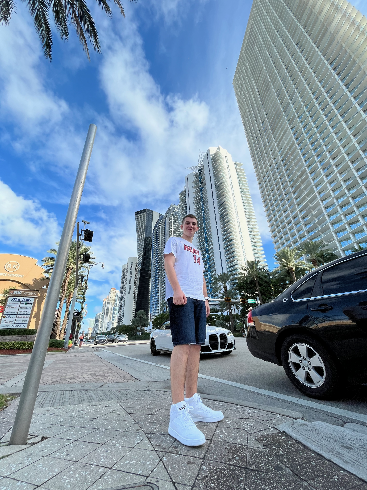

I’m Ignacio Bonetto, an Argentine student whose passion for technology began with video games—not just playing them, but understanding how they worked. I became fascinated by consoles, their hardware, and later smartphones, and for a while, I thought I’d pursue hardware engineering. But as I neared the end of high school, I realized that path didn’t truly excite me. On my own, I started learning Python—and everything clicked. I discovered that software, with its blend of logic, creativity, and problem-solving, was where I belonged. That led me to study Computer Engineering in Peru, where I completed my first year and fell in love with courses like Calculus and Discrete Mathematics. Now in Madrid, I’m pursuing a double degree in Computer Engineering and Mathematical Engineering at UFV because I believe that combining deep technical knowledge with analytical thinking gives me the best chance to make a meaningful impact. My ultimate goal isn’t just to build a career, it’s to help shape the future of technology, especially through AI, and leave a lasting mark on the world, that for me is legacy.
My multicultural perspective began early: I moved to Peru at just 7 years old and spent the next eleven formative years there—learning, growing, and shaping my worldview in a country that became a second home. When I arrived in Madrid at 18 to start my double degree at UFV, I wasn’t just changing countries; I was stepping into a new chapter of independence, academic rigor, and personal discovery. The shift from Lima to Madrid brought subtle but meaningful differences—in classroom dynamics, social rhythms, and even how ambition and creativity are expressed. Navigating this transition deepened my adaptability and taught me to embrace change not as an obstacle, but as an opportunity to learn, connect, and evolve—both as a student and as someone determined to contribute to the future of technology.

